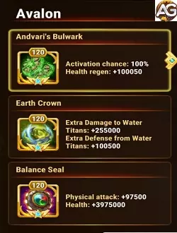

Illustration of Titan Avalon from the game Hero Wars Alliance, developed by Nexters.
Titan Avalon Guide Hero Wars Alliance
By: Alexandre Domingos. .
Main Attributes
Main Attribute
Middle Line
Function
Support, Defense
Main Element
Earth
How to Obtain Soul Stones
Events, Summoning Sphere
Tier List 2024
Titan Tier List
B
Dungeon Tier List
S+
Mastering Avalon in Hero Wars: A Comprehensive Guide
Introduction:
Avalon is a pivotal Earth element support titan in Hero Wars, renowned for her exceptional ability to shield the entire team from harm, particularly against Water element titans. While she may not be the go-to choice for PvP battles, she shines brightly in dungeon scenarios, thanks to her prowess in team protection and healing capabilities.
Understanding Avalon's Abilities:
Forest Hug (1st Skill):
Description: Throws a shield that absorbs damage taken from all allies.
Damage Absorption: 300% of physical attack.
This skill is Avalon's primary asset, providing a substantial shield to safeguard your team from incoming damage. It's crucial for maintaining the team's survivability, especially in prolonged battles where sustaining health is paramount.
Strategies for Utilizing Avalon:
Team Composition:
Pair Avalon with Titans that complement her supportive role. Consider heroes that enhance defense or provide additional healing to create a well-rounded team. Since Avalon excels in dungeons, focus on assembling a team that can withstand sustained damage and adapt to various enemy compositions.
Prioritize Shield Deployment:
Always prioritize activating Forest Hug at the beginning of battles or when facing significant threats. The shield can absorb a considerable amount of damage, giving your team crucial breathing room to execute their strategies. Monitor the shield's duration and ensure timely reapplication to maintain consistent protection throughout the battle.
Strategic Positioning:
Position Avalon strategically within your team formation, ensuring that she can deploy Forest Hug effectively to shield all allies. Consider placing her in a central position or slightly towards the backline to maximize her protective capabilities while still allowing her to contribute to the battle with her healing abilities.
Synergize with Weapon Artifact:
Leverage Avalon's weapon artifact, which possesses the ability to heal the entire team. This further bolsters her supportive role and enhances the team's sustainability during prolonged engagements. Coordinate the activation of her weapon artifact with Forest Hug to create potent combinations that significantly bolster the team's survivability.
Analysis of Titan Avalon in Dungeon:
1. Healing Artifact and Shield:
Avalon's healing artifact allows for consistent regeneration of your team's health, ensuring that your titans can endure prolonged engagements without succumbing to damage. Her shield ability serves as a crucial line of defense, reducing incoming damage and providing a buffer for your team to strategize and execute their moves effectively.
2. Regeneration for Earth Titans:
Avalon's presence becomes even more beneficial in Earth versus Water element battles within the dungeon. With each encounter, she regenerates the health of Earth titans, enhancing their durability and resilience against water-based adversaries.
3. Power Level Importance:
The effectiveness of Avalon in dungeon missions is directly correlated with her power level. Having Avalon with high power ensures that her healing and shielding capabilities are maximized, thus significantly increasing the team's chances of success in completing dungeon missions.
4. Enhanced Benefits for Progression:
By incorporating Avalon into your dungeon team and ensuring she maintains a high power level, you not only increase your chances of completing missions but also unlock additional benefits. These benefits include more opportunities to level up both your heroes and titans, thereby accelerating overall progression within the game.
Avalon Positive and Negative Points
Positive Points
Shield that absorbs all types of damage
Shield for all allies
Weapon artifact with healing for the team
Negative Points
Weak Shield for PvP Wars
It causes little damage.
Avalon Stats Evolution Priority
Avalon Artifacts Priority
When selecting artifacts for Avalon, it's crucial to prioritize the Weapon artifact as the primary choice. By doing so, when you activate the artifact during battles, it grants Avalon the ability to heal the entire team, significantly boosting your team's sustainability and endurance in combat situations.
Following the Weapon artifact, the next priority should be given to the Seal of Balance. Investing in this artifact enhances Avalon's overall vitality and physical attack prowess. This increase in vitality not only ensures Avalon's survivability but also amplifies the potency of her shield ability, providing even greater protection to the team. Additionally, bolstering Avalon's physical attack augments her offensive capabilities, making her a more formidable force on the battlefield.
Finally, consider prioritizing the Crown of the Earth artifact. This artifact serves to fortify Avalon's defenses and amplifies her damage output specifically against Water element titans. By enhancing Avalon's defensive capabilities, the Crown of the Earth artifact further reinforces her role as a reliable protector of the team. Additionally, the increased damage against Water element titans ensures that Avalon remains effective even in encounters where such adversaries pose a significant threat. In conclusion, by strategically prioritizing the Weapon, Seal of Balance, and Crown of the Earth artifacts, you can optimize Avalon's performance, making her an invaluable asset in your battles and dungeon missions in Hero Wars.
Artifacts Priorities of Avalon
Priority
Artifacts
1st
Andvari's Bulwark (Weapon)
2nd
Seal of Balance
3rd
Crown of the Earth

Artifacts of the Titan Avalon, Hero Wars.
Skins Priority
When leveling up Avalon's skins, it's recommended to prioritize upgrading the default skin as the first choice. This results in a significant increase in the damage absorbed by Avalon's shield, thus strengthening the team's defensive capability during battles. With a sturdier shield, Avalon can provide more effective protection to the team members, ensuring their safety in prolonged and intense combat.
After upgrading the default skin, the next step is to invest in improving the primal skin. This choice aims to increase Avalon's health pool, providing her with a larger reserve of health and consequently enhancing her survivability on the battlefield. With expanded health, Avalon can withstand enemy attacks for longer periods and continue to fulfill her crucial role as the team's protector and support.
Priority
Skins
1st
Physical attack
2nd
Health
Titan Avalon with Primordial Skin, Hero Wars.
Titan Avalon in Battles
Strong Against
Hyperion, Mairi, Nova, Sigurd
Titan Avalon Counters
Araji, Eden, Hyperion, Keros
Titan Avalon Best Teams
Number
Titans
Best Avalon Teams
1
Amon, Eden, Iyari, Avalon, Moloch
2
Amon, Hyperion, Iyari, Avalon, Sigurd
3
Keros, Hyperion, Araji, Avalon, Sigurd
4
Amon, Eden, Avalon, Nova, Angus
5
Amon, Eden, Avalon, Nova, Sigurd
6
Amon, Eden, Avalon, Nova, Moloch
7
Hyperion, Eden, Araji, Avalon, Moloch
8
Hyperion, Eden, Araji, Avalon, Sigurd
9
Hyperion, Eden, Araji, Avalon, Angus
10
Hyperion, Araji, Avalon, Nova, Angus
11
Hyperion, Araji, Avalon, Nova, Sigurd
Avalon Guide Conclusion
Mastering Avalon in Hero Wars requires a keen understanding of her abilities and strategic utilization in various scenarios. By prioritizing shield deployment, strategic positioning, and synergizing with her weapon artifact, you can harness Avalon's full potential as a formidable support titan, particularly in dungeon environments. With practice and strategic insight, Avalon can become a cornerstone of your team, ensuring victory in even the most challenging encounters.


 Eden
Eden Iyari
Iyari Keros
Keros